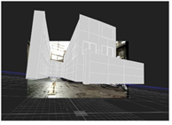
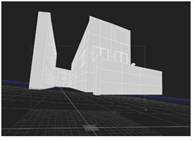
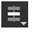

要编辑形状的显示特征:
| 1。 | 如果你创建了很多形状，你可能想把它们组织成组。单击 + ModelBuilder 属性中的按钮，用于创建组项，并在其中拖动形状以将它们移动到组中。 |
| 2. | 要重命名形状或组，请在场景列表中单击它们并输入新名称。 |
| 3. | 如果查看器看起来太混乱，您可以通过单击来切换两个形状或组的可见性 在场景列表中。 |
请注意，当一个项目被隐藏时，它不会出现在查看器或渲染中。
| 4. | 如果已将几何图形连接到 Geo 输入，但目前不需要它作为参考，您也可以取消选中 通过 Geo 。这告诉 ModelBuilder 不要输出该几何图形。 |
请注意，当 通过 Geo 如果启用，几何图形将同时出现在查看器和渲染中。
| 5. | 默认情况下, Src 每当查看器被锁定到输入相机时，图像都会显示在 3D 查看器中。如果你不想这样，取消选中 显示源图像 . |
|
 |
 |
| 显示源图像 已启用。 | 显示源图像 禁用。 |
| 6. | 使用 显示 和 渲染 用于选择形状在查看器中的显示和渲染方式的控件。这些控件影响所有现有形状。 |
例如，您可能希望设置 显示 到 线框 最初是为了更好地看到你在定位形状时做了什么，但是把它改成 纹理 查看最终结果。
有关可用选项的详细信息，请参阅 对象显示属性 .
| 7. | 如果你设置 显示 到 纹理 或 纹理 + 线框 ,您也可以使用 纹理 控件来选择用于纹理形状的框架: |
• 当前帧 -将当前帧投影到形状上。
• 锁定框架 -将右侧字段中指定的帧投影到形状上。这可以帮助你将形状与你的源镜头对齐。
• 帧差 -从当前帧中减去右侧字段中指定的帧，并将结果帧投影到形状上。这可以帮助你将形状与你的源镜头对齐。
| 8。 | 如果要在查看器中禁用形状选择，请取消选中 可选 。只有当选择模式菜单设置为 选择节点  在 ModelBuilder 工具栏中。 |
| 9. | 如果您不希望形状投射或接收阴影，请取消选中 铸造 影子 或 接收阴影 . |
有关阴影的更多信息，请参见 投射阴影 .
| 10. | 继续到 定位形状 下面。 |
|
|